#062 Geodude
catalog/3D print/Фігурки/Геодуд фігурка 3д.jpg
cut → cut; crop [0, 0, 682, 1024]; aspect_outside_cover_band_unsafe_cover
before desktop 62.5% W / 94.0% Hafter desktop
62.5% W / 94.0% Hafter desktop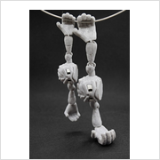
62.5% W / 94.0% Hbefore mobile 78.2% W / 94.0% Hafter mobile
78.2% W / 94.0% Hafter mobile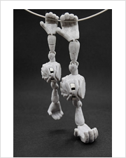
78.2% W / 94.0% H #084 Dark 3D slab stand photo
catalog/3D print/Функціональні/pidstavka-slab-tcg-01.jpg.JPG
photo → photo; crop [0, 0, 3024, 3716]; non_white_or_mixed_non_white_corners
before desktop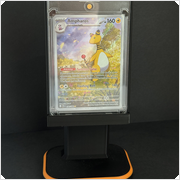
100.0% W / 122.9% Hafter desktop 100.0% W / 122.9% Hbefore mobile
100.0% W / 122.9% Hbefore mobile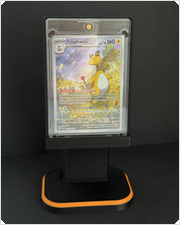
101.7% W / 100.0% Hafter mobile 101.7% W / 100.0% H
101.7% W / 100.0% H #087 Ditto cup
catalog/3D print/Функціональні/stakan-dlia-ruchok-ditto-pokemon-3d-druk.webp
cut → cut; crop [0, 0, 1024, 1535]; aspect_outside_cover_band_unsafe_cover
before desktop 62.6% W / 94.0% Hafter desktop62.6% W / 94.0% Hbefore mobile
62.6% W / 94.0% Hafter desktop62.6% W / 94.0% Hbefore mobile 78.3% W / 94.0% Hafter mobile
78.3% W / 94.0% Hafter mobile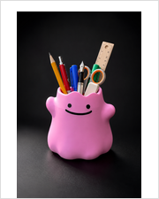
78.3% W / 94.0% H #097 Album 400 yellow
catalog/Accsesuary/albom-dlia-kartok-OnePiece-na-400-slotiv.png
cut → photo; crop [0, 0, 1536, 1024]; uniform_non_white_safe_cover_both_slots
before desktop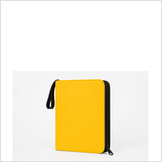
41.7% W / 47.1% Hafter desktop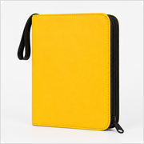
74.5% W / 84.2% Hbefore mobile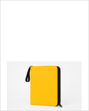
41.7% W / 37.7% Hafter mobile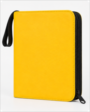
93.2% W / 84.2% H #098 albom-dlia-kartok-pokemon-na-400-slotiv.png
catalog/Accsesuary/albom-dlia-kartok-pokemon-na-400-slotiv.png
cut → cut; crop [170, 197, 1270, 930]; opaque_page_white_uniform_corners
before desktop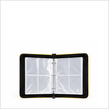
63.6% W / 42.3% Hafter desktop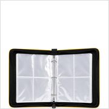
83.7% W / 55.6% Hbefore mobile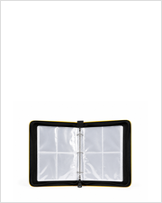
63.6% W / 33.8% Hafter mobile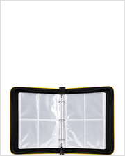
83.7% W / 44.5% H #103 Album 360 white
catalog/Accsesuary/Альбом для колекційних карток на 360 карток, білий.png
photo → photo; crop [0, 0, 1254, 1254]; non_white_or_mixed_non_white_corners
before desktop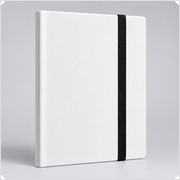
100.0% W / 100.0% Hafter desktop 100.0% W / 100.0% Hbefore mobile
100.0% W / 100.0% Hbefore mobile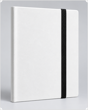
125.0% W / 100.0% Hafter mobile 125.0% W / 100.0% H
125.0% W / 100.0% H #104 Album 360 yellow
catalog/Accsesuary/Альбом для колекційних карток на 360 карток, жовтий.png
photo → photo; crop [0, 0, 1254, 1254]; non_white_or_mixed_non_white_corners
before desktop 100.0% W / 100.0% Hafter desktop
100.0% W / 100.0% Hafter desktop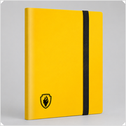
100.0% W / 100.0% Hbefore mobile 125.0% W / 100.0% Hafter mobile
125.0% W / 100.0% Hafter mobile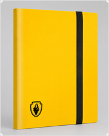
125.0% W / 100.0% H #105 Album 360 black
catalog/Accsesuary/Альбом для колекційних карток на 360 карток, чорний.png
photo → photo; crop [0, 0, 1254, 1254]; non_white_or_mixed_non_white_corners
before desktop 100.0% W / 100.0% Hafter desktop
100.0% W / 100.0% Hafter desktop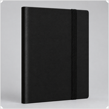
100.0% W / 100.0% Hbefore mobile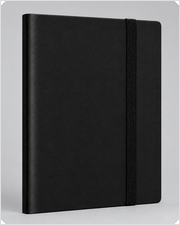
125.0% W / 100.0% Hafter mobile 125.0% W / 100.0% H
125.0% W / 100.0% H #106 Album 360 inside
catalog/Accsesuary/Альбом для колекційних карток на 360 карток.png
photo → photo; crop [0, 0, 1254, 1254]; non_white_or_mixed_non_white_corners
before desktop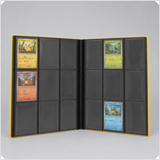
100.0% W / 100.0% Hafter desktop 100.0% W / 100.0% Hbefore mobile
100.0% W / 100.0% Hbefore mobile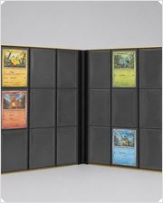
125.0% W / 100.0% Hafter mobile 125.0% W / 100.0% H
125.0% W / 100.0% H #107 Album 360 multiple
catalog/Accsesuary/Альбоми для колекційних карток на 360 карток.png
photo → photo; crop [0, 0, 1254, 1254]; non_white_or_mixed_non_white_corners
before desktop83.9% W / 93.5% Hafter desktop 83.9% W / 93.5% Hbefore mobile
83.9% W / 93.5% Hbefore mobile 104.9% W / 93.5% Hafter mobile104.9% W / 93.5% H
104.9% W / 93.5% Hafter mobile104.9% W / 93.5% H #108 Album 360 white inside
catalog/Accsesuary/Білий альбом для колекційних карток на 360 карток.png
photo → photo; crop [0, 0, 1254, 1254]; non_white_or_mixed_non_white_corners
before desktop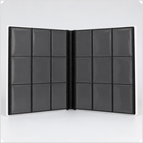
100.0% W / 100.0% Hafter desktop 100.0% W / 100.0% Hbefore mobile
100.0% W / 100.0% Hbefore mobile 125.0% W / 100.0% Hafter mobile
125.0% W / 100.0% Hafter mobile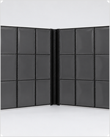
125.0% W / 100.0% H #111 Топлоадери для карток 35PT, 25 шт toploaders 2 var.png
catalog/Accsesuary/Топлоадери для карток 35PT, 25 шт toploaders 2 var.png
cut → cut; crop [69, 12, 634, 723]; transparent_corners
before desktop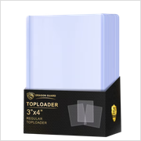
69.6% W / 87.7% Hafter desktop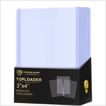
74.2% W / 93.5% Hbefore mobile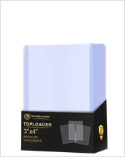
69.6% W / 70.2% Hafter mobile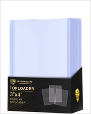
83.4% W / 84.1% H #112 Топлоадери для карток 35PT, 25 шт toploaders 3 var.png
catalog/Accsesuary/Топлоадери для карток 35PT, 25 шт toploaders 3 var.png
cut → cut; crop [1, 2, 472, 903]; transparent_corners
before desktop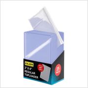
46.9% W / 90.4% Hafter desktop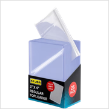
48.7% W / 93.7% Hbefore mobile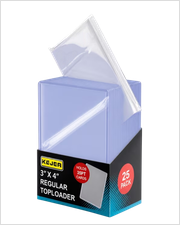
58.6% W / 90.4% Hafter mobile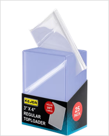
60.8% W / 93.7% H #113 Топлоадери для карток 35PT, 25 шт toploaders.png
catalog/Accsesuary/Топлоадери для карток 35PT, 25 шт toploaders.png
cut → cut; crop [115, 27, 1034, 1098]; transparent_corners
before desktop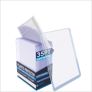
71.2% W / 83.0% Hafter desktop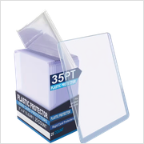
80.4% W / 93.6% Hbefore mobile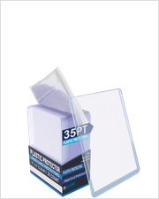
71.2% W / 66.4% Hafter mobile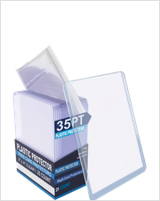
83.6% W / 77.9% H #114 Bandai.jpg
catalog/One Piece/Bandai.jpg
cut → cut; crop [53, 213, 847, 688]; opaque_page_white_uniform_corners
before desktop73.7% W / 44.0% Hafter desktop83.6% W / 49.7% Hbefore mobile73.7% W / 35.2% Hafter mobile83.6% W / 39.8% H
#115 BS Big logo.png
catalog/One Piece/BS Big logo.png
cut → cut; crop [11, 0, 269, 84]; opaque_page_white_uniform_corners
before desktop79.0% W / 25.5% Hafter desktop82.7% W / 26.7% Hbefore mobile79.0% W / 20.4% Hafter mobile82.7% W / 21.4% H
#116 BS Big logo1.jpg
catalog/One Piece/BS Big logo1.jpg
cut → cut; crop [18, 4, 527, 462]; opaque_page_white_uniform_corners
before desktop77.8% W / 70.1% Hafter desktop83.3% W / 75.1% Hbefore mobile77.8% W / 56.1% Hafter mobile83.3% W / 60.1% H
#118 One Piece Mystery Box Standard
catalog/One Piece/Mistery BOX One Piece Standard.jpg
photo → photo; crop [0, 0, 2194, 2194]; non_white_or_mixed_non_white_corners
before desktop 100.0% W / 100.0% Hafter desktop100.0% W / 100.0% Hbefore mobile
100.0% W / 100.0% Hafter desktop100.0% W / 100.0% Hbefore mobile 125.0% W / 100.0% Hafter mobile125.0% W / 100.0% H
125.0% W / 100.0% Hafter mobile125.0% W / 100.0% H #119 One Piece Mystery Box XL
catalog/One Piece/MYSTERY BOX XL ONE PIECE No blur.jpg
photo → photo; crop [0, 0, 2048, 2048]; non_white_or_mixed_non_white_corners
before desktop 100.0% W / 100.0% Hafter desktop100.0% W / 100.0% Hbefore mobile125.0% W / 100.0% Hafter mobile
100.0% W / 100.0% Hafter desktop100.0% W / 100.0% Hbefore mobile125.0% W / 100.0% Hafter mobile 125.0% W / 100.0% H
125.0% W / 100.0% H #120 One Piece Card Game OP-16 The Time of Battle display-Photoroom.png
catalog/One Piece/One Piece Card Game OP-16 The Time of Battle display-Photoroom.png
cut → cut; crop [13, 10, 371, 600]; transparent_corners
before desktop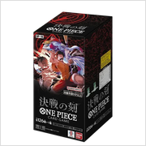
54.1% W / 89.6% Hafter desktop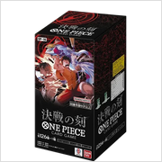
56.4% W / 93.4% Hbefore mobile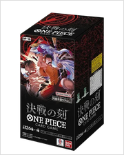
67.6% W / 89.6% Hafter mobile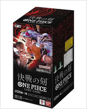
70.5% W / 93.4% H #121 One Piece Card Game OP-16 The Time of Battle-Photoroom.png
catalog/One Piece/One Piece Card Game OP-16 The Time of Battle-Photoroom.png
cut → cut; crop [34, 22, 510, 977]; transparent_corners
before desktop44.3% W / 89.4% Hafter desktop46.4% W / 93.6% Hbefore mobile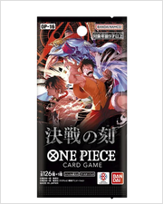
55.4% W / 89.4% Hafter mobile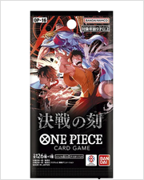
58.1% W / 93.6% H #122 OP-17 booster
catalog/One Piece/One Piece Card Game The World's Strongest Warriors [OP-17] - Japanese Version.webp
cut → cut; crop [349, 20, 865, 1057]; transparent_corners
before desktop35.4% W / 71.4% Hafter desktop46.4% W / 93.6% Hbefore mobile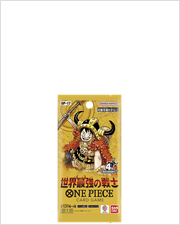
35.4% W / 57.1% Hafter mobile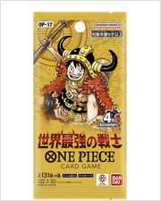
58.0% W / 93.6% H #123 OP-17 booster box
catalog/One Piece/One Piece Card Game The World's Strongest Warriors [OP-17] booster box - Japanese Version.webp
cut → cut; crop [157, 40, 514, 630]; transparent_corners
before desktop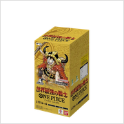
44.4% W / 73.5% Hafter desktop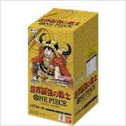
56.4% W / 93.4% Hbefore mobile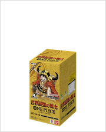
44.4% W / 58.8% Hafter mobile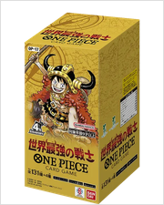
70.5% W / 93.4% H #126 One Piece — OP-09 — JP — Booster box.png
catalog/One Piece/One Piece — OP-09 — JP — Booster box.png
cut → cut; crop [23, 17, 307, 484]; transparent_corners
before desktop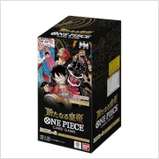
52.6% W / 87.0% Hafter desktop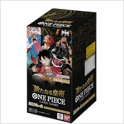
56.4% W / 93.2% Hbefore mobile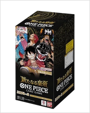
65.8% W / 87.0% Hafter mobile70.5% W / 93.2% H #127 One Piece — OP-09 — JP — Booster display.png
catalog/One Piece/One Piece — OP-09 — JP — Booster display.png
cut → cut; crop [33, 41, 527, 521]; transparent_corners
before desktop73.5% W / 71.4% Hafter desktop83.3% W / 80.9% Hbefore mobile73.5% W / 57.1% Hafter mobile83.3% W / 64.8% H
#128 One Piece — OP-09 — JP — Booster.png
catalog/One Piece/One Piece — OP-09 — JP — Booster.png
cut → cut; crop [460, 27, 1140, 1391]; transparent_corners
before desktop35.5% W / 71.4% Hafter desktop46.6% W / 93.7% Hbefore mobile35.5% W / 57.1% Hafter mobile58.2% W / 93.7% H
#129 One Piece — OP-13 — JP — Booster box.png
catalog/One Piece/One Piece — OP-13 — JP — Booster box.png
cut → cut; crop [46, 26, 620, 972]; transparent_corners
before desktop53.6% W / 88.6% Hafter desktop56.5% W / 93.7% Hbefore mobile67.0% W / 88.6% Hafter mobile70.7% W / 93.7% H
#130 One Piece — OP-13 — JP — Booster dispay.png
catalog/One Piece/One Piece — OP-13 — JP — Booster dispay.png
cut → cut; crop [31, 0, 409, 800]; transparent_corners
before desktop43.9% W / 94.0% Hafter desktop43.9% W / 94.0% Hbefore mobile54.9% W / 94.0% Hafter mobile54.9% W / 94.0% H
#131 OP-13 booster
catalog/One Piece/One Piece — OP-13 — JP — Booster.png
cut → cut; crop [36, 25, 508, 973]; transparent_corners
before desktop44.0% W / 88.7% Hafter desktop46.3% W / 93.6% Hbefore mobile55.0% W / 88.7% Hafter mobile57.9% W / 93.6% H
#132 One Piece-Photoroom.png
catalog/One Piece/One Piece-Photoroom.png
cut → cut; crop [34, 5, 427, 107]; transparent_corners
before desktop70.6% W / 17.8% Hafter desktop83.1% W / 20.9% Hbefore mobile70.6% W / 14.2% Hafter mobile83.1% W / 16.8% H
#134 One-Piece-Boosters-EB-02 display.png
catalog/One Piece/One-Piece-Boosters-EB-02 display.png
cut → cut; crop [42, 28, 579, 575]; transparent_corners
before desktop70.0% W / 71.3% Hafter desktop83.4% W / 84.9% Hbefore mobile70.0% W / 57.0% Hafter mobile83.4% W / 68.0% H
#135 EB-02 Rare Pack
catalog/One Piece/One-Piece-Boosters-EB-02.png
cut → cut; crop [112, 4, 363, 495]; transparent_corners
before desktop43.2% W / 85.2% Hafter desktop47.3% W / 93.2% Hbefore mobile43.2% W / 68.2% Hafter mobile59.1% W / 93.2% H
#136 one-piece-card-game-start-deck-yellow-eustass-kid-st-36-1.png
catalog/One Piece/one-piece-card-game-start-deck-yellow-eustass-kid-st-36-1.png
cut → cut; crop [17, 0, 531, 900]; transparent_corners
before desktop53.2% W / 94.0% Hafter desktop53.2% W / 94.0% Hbefore mobile66.5% W / 94.0% Hafter mobile66.5% W / 94.0% H
#137 one-piece-eb01-memorial-collection-rare-pack-back.png
catalog/One Piece/one-piece-eb01-memorial-collection-rare-pack-back.png
cut → cut; crop [145, 15, 880, 1460]; transparent_corners
before desktop44.7% W / 88.2% Hafter desktop47.6% W / 93.7% Hbefore mobile55.9% W / 88.2% Hafter mobile59.5% W / 93.7% H
#138 one-piece-eb01-memorial-collection-rare-pack-front.png
catalog/One Piece/one-piece-eb01-memorial-collection-rare-pack-front.png
cut → cut; crop [26, 15, 486, 929]; transparent_corners
before desktop45.0% W / 89.9% Hafter desktop46.9% W / 93.6% Hbefore mobile56.3% W / 89.9% Hafter mobile58.6% W / 93.6% H
#139 OP JP V7-PROMO.png
catalog/One Piece/OP JP V7-PROMO.png
cut → cut; crop [28, 0, 278, 400]; opaque_page_white_uniform_corners
before desktop57.8% W / 94.0% Hafter desktop57.8% W / 94.0% Hbefore mobile67.3% W / 87.6% Hafter mobile72.3% W / 94.0% H
#140 OP-08 Booster.png
catalog/One Piece/OP-08 Booster.png
cut → cut; crop [32, 0, 471, 878]; transparent_corners
before desktop46.5% W / 93.8% Hafter desktop46.5% W / 93.8% Hbefore mobile58.2% W / 93.8% Hafter mobile58.1% W / 93.8% H
#143 OP-15 booster
catalog/One Piece/OP-15 Booster.webp
cut → cut; crop [0, 0, 209, 418]; mixed_page_white_or_transparent_corners
before desktop 47.0% W / 94.0% Hafter desktop47.0% W / 94.0% Hbefore mobile
47.0% W / 94.0% Hafter desktop47.0% W / 94.0% Hbefore mobile 58.8% W / 94.0% Hafter mobile58.8% W / 94.0% H
58.8% W / 94.0% Hafter mobile58.8% W / 94.0% H #144 OP-15 Box 2.png
catalog/One Piece/OP-15 Box 2.png
cut → cut; crop [442, 109, 1470, 1810]; transparent_corners
before desktop44.8% W / 74.2% Hafter desktop56.5% W / 93.8% Hbefore mobile44.8% W / 59.4% Hafter mobile70.6% W / 93.8% H
#145 OP-15 Box.png
catalog/One Piece/OP-15 Box.png
cut → cut; crop [9, 11, 628, 427]; transparent_corners
before desktop80.6% W / 53.9% Hafter desktop83.6% W / 55.9% Hbefore mobile80.6% W / 43.1% Hafter mobile83.6% W / 44.7% H
#146 Rare Pack One Piece OP-01 Romance Dawn — зворотна сторона японського бустера.png
catalog/One Piece/Rare Pack One Piece OP-01 Romance Dawn — зворотна сторона японського бустера.png
cut → cut; crop [5, 0, 394, 769]; transparent_corners
before desktop46.9% W / 93.4% Hafter desktop47.1% W / 93.8% Hbefore mobile58.6% W / 93.4% Hafter mobile58.8% W / 93.8% H
#147 Rare Pack One Piece OP-01 Romance Dawn — лицьова сторона японського бустера.png
catalog/One Piece/Rare Pack One Piece OP-01 Romance Dawn — лицьова сторона японського бустера.png
cut → cut; crop [21, 24, 893, 1803]; transparent_corners
before desktop44.9% W / 92.0% Hafter desktop45.8% W / 93.8% Hbefore mobile56.1% W / 92.0% Hafter mobile57.2% W / 93.8% H
#148 Rare Pack One Piece OP-04 Kingdoms of Intrigue — зворотна сторона японського бустера.png
catalog/One Piece/Rare Pack One Piece OP-04 Kingdoms of Intrigue — зворотна сторона японського бустера.png
cut → cut; crop [19, 26, 550, 1061]; transparent_corners
before desktop45.2% W / 88.5% Hafter desktop47.8% W / 93.6% Hbefore mobile56.5% W / 88.5% Hafter mobile59.7% W / 93.6% H
#149 Rare Pack One Piece OP-04 Kingdoms of Intrigue — лицьова сторона японського бустера.png
catalog/One Piece/Rare Pack One Piece OP-04 Kingdoms of Intrigue — лицьова сторона японського бустера.png
cut → cut; crop [36, 23, 640, 1236]; transparent_corners
before desktop45.0% W / 90.9% Hafter desktop46.4% W / 93.7% Hbefore mobile56.3% W / 90.9% Hafter mobile58.0% W / 93.7% H
#150 Rare Pack One Piece OP-05 Awakening of the New Era — зворотна сторона японського бустера.png
catalog/One Piece/Rare Pack One Piece OP-05 Awakening of the New Era — зворотна сторона японського бустера.png
cut → cut; crop [100, 87, 1153, 2207]; transparent_corners
before desktop44.5% W / 89.7% Hafter desktop46.4% W / 93.8% Hbefore mobile55.6% W / 89.7% Hafter mobile58.1% W / 93.8% H
#151 Rare Pack One Piece OP-06 Wings of the Captain — зворотна сторона японського бустера.png
catalog/One Piece/Rare Pack One Piece OP-06 Wings of the Captain — зворотна сторона японського бустера.png
cut → cut; crop [129, 154, 1235, 2318]; transparent_corners
before desktop43.1% W / 84.6% Hafter desktop47.8% W / 93.8% Hbefore mobile53.9% W / 84.6% Hafter mobile59.8% W / 93.8% H
#152 Rare Pack One Piece OP-06 Wings of the Captain — лицьова сторона японського бустера.png
catalog/One Piece/Rare Pack One Piece OP-06 Wings of the Captain — лицьова сторона японського бустера.png
cut → cut; crop [14, 27, 982, 1976]; transparent_corners
before desktop45.6% W / 92.1% Hafter desktop46.4% W / 93.8% Hbefore mobile57.0% W / 92.1% Hafter mobile58.0% W / 93.8% H
#153 Rare Pack One Piece OP-09 Emperors in the New World — зворотна сторона японського бустера.png
catalog/One Piece/Rare Pack One Piece OP-09 Emperors in the New World — зворотна сторона японського бустера.png
cut → cut; crop [21, 26, 951, 1876]; transparent_corners
before desktop45.6% W / 90.9% Hafter desktop47.0% W / 93.8% Hbefore mobile57.0% W / 90.9% Hafter mobile58.7% W / 93.8% H
#154 Rare Pack One Piece OP-09 Emperors in the New World — лицьова сторона японського бустера.png
catalog/One Piece/Rare Pack One Piece OP-09 Emperors in the New World — лицьова сторона японського бустера.png
cut → cut; crop [9, 13, 374, 742]; transparent_corners
before desktop45.4% W / 91.1% Hafter desktop46.5% W / 93.5% Hbefore mobile56.7% W / 91.1% Hafter mobile58.2% W / 93.5% H
#155 STARTER DECK -Red Black Sabo- [ST-35] ONE PIECE CARD GAME.png
catalog/One Piece/STARTER DECK -Red Black Sabo- [ST-35] ONE PIECE CARD GAME.png
cut → cut; crop [7, 17, 331, 587]; transparent_corners
before desktop49.8% W / 88.1% Hafter desktop52.8% W / 93.3% Hbefore mobile62.3% W / 88.1% Hafter mobile66.0% W / 93.3% H
#156 STARTER DECK BLUE Kuzan- [ST-33] ONE PIECE CARD GAME.png
catalog/One Piece/STARTER DECK BLUE Kuzan- [ST-33] ONE PIECE CARD GAME.png
cut → cut; crop [20, 0, 533, 900]; transparent_corners
before desktop53.1% W / 94.0% Hafter desktop53.1% W / 94.0% Hbefore mobile66.4% W / 94.0% Hafter mobile66.4% W / 94.0% H
#157 STARTER DECK PURPLE Charlotte Katakuri- [ST-34] ONE PIECE CARD.png
catalog/One Piece/STARTER DECK PURPLE Charlotte Katakuri- [ST-34] ONE PIECE CARD.png
cut → cut; crop [7, 12, 331, 582]; transparent_corners
before desktop50.8% W / 89.9% Hafter desktop52.8% W / 93.3% Hbefore mobile63.5% W / 89.9% Hafter mobile66.0% W / 93.3% H
#158 STARTER DECK ST-32 ONE PIECE CARD GAME.png
catalog/One Piece/STARTER DECK ST-32 ONE PIECE CARD GAME.png
cut → cut; crop [9, 6, 315, 536]; transparent_corners
before desktop52.2% W / 90.9% Hafter desktop53.6% W / 93.3% Hbefore mobile65.2% W / 90.9% Hafter mobile67.0% W / 93.3% H
#159 STARTER DECK ST-32, 33, 34, 35, 36 ONE PIECE CARD GAME.png
catalog/One Piece/STARTER DECK ST-32, 33, 34, 35, 36 ONE PIECE CARD GAME.png
cut → cut; crop [15, 46, 1032, 1195]; transparent_corners
before desktop77.9% W / 87.9% Hafter desktop83.0% W / 93.7% Hbefore mobile80.8% W / 73.0% Hafter mobile83.7% W / 75.6% H
#160 Бустер One Piece Card Game EB-03 (Японське видання).png
catalog/One Piece/Бустер One Piece Card Game EB-03 (Японське видання).png
cut → cut; crop [0, 42, 634, 1227]; transparent_corners
before desktop46.5% W / 86.7% Hafter desktop50.3% W / 93.7% Hbefore mobile58.1% W / 86.7% Hafter mobile62.8% W / 93.7% H
#162 Бустер One Piece Card Game OP-10 (Японське видання).png
catalog/One Piece/Бустер One Piece Card Game OP-10 (Японське видання).png
cut → cut; crop [2, 3, 489, 980]; transparent_corners
before desktop46.0% W / 92.8% Hafter desktop46.5% W / 93.6% Hbefore mobile57.5% W / 92.8% Hafter mobile58.1% W / 93.6% H
#163 Бустер One Piece Card Game OP-11 (Японське видання).png
catalog/One Piece/Бустер One Piece Card Game OP-11 (Японське видання).png
cut → cut; crop [99, 0, 301, 400]; transparent_corners
before desktop41.6% W / 83.8% Hafter desktop46.5% W / 93.8% Hbefore mobile41.6% W / 67.0% Hafter mobile58.2% W / 93.8% H
#164 Бустер One Piece Card Game OP-12 (Японське видання).png
catalog/One Piece/Бустер One Piece Card Game OP-12 (Японське видання).png
cut → cut; crop [5, 7, 349, 694]; transparent_corners
before desktop45.7% W / 91.9% Hafter desktop46.5% W / 93.6% Hbefore mobile57.1% W / 91.9% Hafter mobile58.2% W / 93.6% H
#165 Бустер One Piece Card Game OP-14 (Японське видання).png
catalog/One Piece/Бустер One Piece Card Game OP-14 (Японське видання).png
cut → cut; crop [10, 16, 475, 947]; transparent_corners
before desktop45.1% W / 91.1% Hafter desktop46.5% W / 93.7% Hbefore mobile56.4% W / 91.1% Hafter mobile58.2% W / 93.7% H
#166 Бустер бокс One Piece Card Game EB-03 (Японське видання).png
catalog/One Piece/Бустер бокс One Piece Card Game EB-03 (Японське видання).png
cut → cut; crop [9, 6, 509, 831]; transparent_corners
before desktop55.7% W / 92.2% Hafter desktop56.5% W / 93.5% Hbefore mobile69.6% W / 92.2% Hafter mobile70.6% W / 93.5% H
#167 Бустер бокс One Piece Card Game OP-07 (Японське видання).png
catalog/One Piece/Бустер бокс One Piece Card Game OP-07 (Японське видання).png
cut → cut; crop [4, 5, 602, 992]; transparent_corners
before desktop55.8% W / 92.4% Hafter desktop56.6% W / 93.6% Hbefore mobile69.8% W / 92.4% Hafter mobile70.7% W / 93.6% H
#168 Бустер бокс One Piece Card Game OP-10 (Японське видання).png
catalog/One Piece/Бустер бокс One Piece Card Game OP-10 (Японське видання).png
cut → cut; crop [4, 0, 610, 999]; transparent_corners
before desktop56.5% W / 93.5% Hafter desktop56.6% W / 93.6% Hbefore mobile70.6% W / 93.5% Hafter mobile70.7% W / 93.6% H
#169 Бустер бокс One Piece Card Game OP-11 (Японське видання).png
catalog/One Piece/Бустер бокс One Piece Card Game OP-11 (Японське видання).png
cut → cut; crop [3, 0, 517, 846]; transparent_corners
before desktop56.7% W / 93.6% Hafter desktop56.7% W / 93.6% Hbefore mobile70.8% W / 93.6% Hafter mobile70.8% W / 93.6% H
#170 Бустер бокс One Piece Card Game OP-12 (Японське видання).png
catalog/One Piece/Бустер бокс One Piece Card Game OP-12 (Японське видання).png
cut → cut; crop [8, 3, 601, 985]; transparent_corners
before desktop55.7% W / 92.7% Hafter desktop56.3% W / 93.6% Hbefore mobile69.7% W / 92.7% Hafter mobile70.4% W / 93.6% H
#171 Бустер бокс One Piece Card Game OP-14 (Японське видання).png
catalog/One Piece/Бустер бокс One Piece Card Game OP-14 (Японське видання).png
cut → cut; crop [7, 6, 593, 980]; transparent_corners
before desktop55.5% W / 92.7% Hafter desktop56.1% W / 93.7% Hbefore mobile69.4% W / 92.7% Hafter mobile70.2% W / 93.7% H
#172 Дисплей бокс One Piece Card Game EB-03 (Японське видання).png
catalog/One Piece/Дисплей бокс One Piece Card Game EB-03 (Японське видання).png
cut → cut; crop [4, 0, 516, 1088]; transparent_corners
before desktop43.9% W / 93.8% Hafter desktop43.8% W / 93.8% Hbefore mobile54.8% W / 93.8% Hafter mobile54.8% W / 93.8% H
#173 Дисплей бокс One Piece Card Game OP-11 (Японське видання).png
catalog/One Piece/Дисплей бокс One Piece Card Game OP-11 (Японське видання).png
cut → cut; crop [43, 57, 556, 1148]; transparent_corners
before desktop39.8% W / 85.1% Hafter desktop43.8% W / 93.7% Hbefore mobile49.8% W / 85.1% Hafter mobile54.8% W / 93.7% H
#174 Дисплей бокс One Piece Card Game OP-12 (Японське видання).png
catalog/One Piece/Дисплей бокс One Piece Card Game OP-12 (Японське видання).png
cut → cut; crop [5, 0, 243, 500]; transparent_corners
before desktop44.0% W / 93.6% Hafter desktop44.0% W / 93.6% Hbefore mobile55.0% W / 93.6% Hafter mobile55.0% W / 93.6% H
#175 Дисплей бокс One Piece Card Game OP-14 (Японське видання).png
catalog/One Piece/Дисплей бокс One Piece Card Game OP-14 (Японське видання).png
cut → cut; crop [2, 0, 473, 999]; transparent_corners
before desktop43.9% W / 93.5% Hafter desktop43.9% W / 93.6% Hbefore mobile54.8% W / 93.5% Hafter mobile54.9% W / 93.6% H
#176 35pt-180pt-magnitni-ramki-dlya-kartok_6l74fhlsgq9cbn63n.jpg
catalog/Other/35pt-180pt-magnitni-ramki-dlya-kartok_6l74fhlsgq9cbn63n.jpg
cut → cut; crop [253, 89, 738, 962]; opaque_page_white_uniform_corners
before desktop40.4% W / 73.1% Hafter desktop51.8% W / 93.7% Hbefore mobile40.4% W / 58.5% Hafter mobile64.7% W / 93.7% H
#177 Adventures in the Forgotten Realms MTG.png
catalog/Other/Adventures in the Forgotten Realms MTG.png
cut → cut; crop [3, 0, 796, 799]; transparent_corners
before desktop82.8% W / 83.5% Hafter desktop83.6% W / 84.2% Hbefore mobile82.8% W / 66.8% Hafter mobile83.6% W / 67.3% H
#178 G7D 9-pocket sheet v1
catalog/Other/arkush-na-9-kyshenok-game-7-days-9-pocket-page..png
cut → cut; crop [54, 0, 482, 536]; transparent_corners
before desktop66.4% W / 84.0% Hafter desktop74.4% W / 94.0% Hbefore mobile66.4% W / 67.2% Hafter mobile83.2% W / 84.2% H
#179 G7D 9-pocket sheet v2
catalog/Other/arkush-na-9-kyshenok-game-7-days-9-pocket-page.png
cut → cut; crop [66, 0, 414, 480]; transparent_corners
before desktop60.2% W / 84.0% Hafter desktop67.4% W / 94.0% Hbefore mobile60.2% W / 67.2% Hafter mobile83.0% W / 92.7% H
#180 booster Yu-Gi-Oh! OCG World Premiere Pack 2024.png
catalog/Other/booster Yu-Gi-Oh! OCG World Premiere Pack 2024.png
cut → cut; crop [6, 13, 266, 546]; transparent_corners
before desktop43.4% W / 89.6% Hafter desktop45.1% W / 93.3% Hbefore mobile54.2% W / 89.6% Hafter mobile56.4% W / 93.3% H
#182 Duel Masters — DM24-RP3 — JP — Booster box.png
catalog/Other/Duel Masters — DM24-RP3 — JP — Booster box.png
cut → cut; crop [0, 165, 1400, 1233]; transparent_corners
before desktop84.0% W / 63.8% Hafter desktop84.0% W / 63.8% Hbefore mobile84.0% W / 51.1% Hafter mobile84.0% W / 51.1% H
#183 Duel Masters — DM24-RP3 — JP — Booster display.png
catalog/Other/Duel Masters — DM24-RP3 — JP — Booster display.png
cut → cut; crop [98, 20, 1002, 1080]; transparent_corners
before desktop68.7% W / 80.6% Hafter desktop79.9% W / 93.6% Hbefore mobile68.7% W / 64.5% Hafter mobile83.6% W / 78.4% H
#184 Duel Masters — DM24-RP3 — JP — Booster.png
catalog/Other/Duel Masters — DM24-RP3 — JP — Booster.png
cut → cut; crop [281, 20, 819, 1079]; transparent_corners
before desktop40.8% W / 80.6% Hafter desktop47.3% W / 93.6% Hbefore mobile40.8% W / 64.5% Hafter mobile59.2% W / 93.6% H
#186 G7D sleeves 63.5 x 88
catalog/Other/G7D sleeves premium plus (MTG).webp
photo → cut; crop [0, 0, 362, 500]; mixed_page_white_or_transparent_corners
before desktop100.0% W / 138.1% Hafter desktop68.1% W / 94.0% Hbefore mobile100.0% W / 110.5% Hafter mobile84.0% W / 92.8% H
#187 G7D.jpg
catalog/Other/G7D.jpg
cut → cut; crop [24, 0, 225, 225]; opaque_page_white_uniform_corners
before desktop74.3% W / 84.0% Hafter desktop83.1% W / 94.0% Hbefore mobile74.3% W / 67.2% Hafter mobile83.2% W / 75.2% H
#188 Konami-Logo.png
catalog/Other/Konami-Logo.png
cut → cut; crop [11, 20, 2389, 426]; transparent_corners
before desktop83.1% W / 14.1% Hafter desktop83.9% W / 14.1% Hbefore mobile83.1% W / 11.2% Hafter mobile83.9% W / 11.3% H
#189 Magic_The_Gathering_logo.png
catalog/Other/Magic_The_Gathering_logo.png
cut → cut; crop [39, 332, 1960, 971]; transparent_corners
before desktop80.5% W / 26.6% Hafter desktop83.8% W / 27.7% Hbefore mobile80.5% W / 21.3% Hafter mobile83.8% W / 22.1% H
#194 Toploader 1 pc (review asset)
catalog/Other/Toploader1p (1).webp
cut → cut; crop [66, 173, 789, 704]; transparent_corners
before desktop75.5% W / 55.3% Hafter desktop83.5% W / 61.2% Hbefore mobile75.5% W / 44.3% Hafter mobile83.5% W / 49.0% H
#195 toploadery-3-x-4.png
catalog/Other/toploadery-3-x-4.png
cut → cut; crop [19, 21, 234, 287]; transparent_corners
before desktop64.0% W / 79.4% Hafter desktop74.6% W / 92.6% Hbefore mobile67.4% W / 66.9% Hafter mobile82.4% W / 81.9% H
#196 Wizards of the Coast.png
catalog/Other/Wizards of the Coast.png
cut → cut; crop [10, 9, 392, 254]; transparent_corners
before desktop79.4% W / 50.6% Hafter desktop83.1% W / 53.0% Hbefore mobile79.4% W / 40.5% Hafter mobile83.1% W / 42.4% H
#197 Yu-Gi-Oh OCG Duel Monsters QUARTER CENTURY ART COLLECTION 25th BOX.png
catalog/Other/Yu-Gi-Oh OCG Duel Monsters QUARTER CENTURY ART COLLECTION 25th BOX.png
cut → cut; crop [122, 19, 973, 1067]; transparent_corners
before desktop66.0% W / 81.2% Hafter desktop76.1% W / 93.6% Hbefore mobile66.0% W / 65.0% Hafter mobile83.7% W / 82.4% H
#198 Yu-Gi-Oh OCG Duel Monsters QUARTER CENTURY ART COLLECTION 25th cards.webp
catalog/Other/Yu-Gi-Oh OCG Duel Monsters QUARTER CENTURY ART COLLECTION 25th cards.webp
cut → cut; crop [22, 0, 1532, 449]; aspect_outside_cover_band_unsafe_cover
before desktop79.9% W / 23.8% Hafter desktop83.8% W / 25.0% Hbefore mobile79.9% W / 19.0% Hafter mobile83.8% W / 20.0% H
#200 Yu-Gi-Oh! OCG Blazing Dominion.png
catalog/Other/Yu-Gi-Oh! OCG Blazing Dominion.png
cut → cut; crop [12, 8, 286, 291]; transparent_corners
before desktop75.6% W / 78.1% Hafter desktop82.8% W / 85.5% Hbefore mobile75.6% W / 62.5% Hafter mobile82.8% W / 68.4% H
#201 Yu-Gi-Oh! OCG Duel Monsters BEYOND THE BRAVE Booster Box.png
catalog/Other/Yu-Gi-Oh! OCG Duel Monsters BEYOND THE BRAVE Booster Box.png
cut → cut; crop [46, 397, 1150, 1371]; transparent_corners
before desktop64.6% W / 57.0% Hafter desktop83.7% W / 73.7% Hbefore mobile77.0% W / 54.3% Hafter mobile83.7% W / 59.0% H
#203 Yu-Gi-Oh! OCG Duel Monsters BEYOND THE BRAVE display.png
catalog/Other/Yu-Gi-Oh! OCG Duel Monsters BEYOND THE BRAVE display.png
cut → cut; crop [51, 42, 741, 754]; transparent_corners
before desktop72.0% W / 74.3% Hafter desktop83.5% W / 86.2% Hbefore mobile72.0% W / 59.5% Hafter mobile83.5% W / 69.0% H
#204 Yu-Gi-Oh! OCG World Premiere Pack 2024 (box).png
catalog/Other/Yu-Gi-Oh! OCG World Premiere Pack 2024 (box).png
cut → cut; crop [96, 0, 351, 447]; transparent_corners
before desktop47.2% W / 83.6% Hafter desktop52.8% W / 93.6% Hbefore mobile47.2% W / 66.9% Hafter mobile66.0% W / 93.6% H
#205 Yu-Gi-Oh! OCG World Premiere Pack 2024 BB.png
catalog/Other/Yu-Gi-Oh! OCG World Premiere Pack 2024 BB.png
cut → cut; crop [16, 6, 475, 560]; transparent_corners
before desktop75.2% W / 90.9% Hafter desktop77.2% W / 93.3% Hbefore mobile78.0% W / 75.4% Hafter mobile83.3% W / 80.5% H
#206 Yugioh_logo.png
catalog/Other/Yugioh_logo.png
cut → cut; crop [20, 6, 880, 324]; transparent_corners
before desktop79.9% W / 29.2% Hafter desktop83.6% W / 30.6% Hbefore mobile79.9% W / 23.4% Hafter mobile83.6% W / 24.5% H
#207 Акрилова підставка+кейс.png
catalog/Other/Акрилова підставка+кейс.png
cut → cut; crop [470, 89, 1881, 2334]; transparent_corners
before desktop49.3% W / 78.4% Hafter desktop58.8% W / 93.8% Hbefore mobile49.3% W / 62.7% Hafter mobile73.5% W / 93.8% H
#208 Бустер Yu-Gi-Oh! OCG BURST PROTOCOL (Японське видання) 1.png
catalog/Other/Бустер Yu-Gi-Oh! OCG BURST PROTOCOL (Японське видання) 1.png
cut → cut; crop [14, 19, 561, 545]; transparent_corners
before desktop79.5% W / 76.4% Hafter desktop83.4% W / 80.2% Hbefore mobile79.5% W / 61.1% Hafter mobile83.4% W / 64.1% H
#209 Бустер Yu-Gi-Oh! OCG BURST PROTOCOL (Японське видання).png
catalog/Other/Бустер Yu-Gi-Oh! OCG BURST PROTOCOL (Японське видання).png
cut → cut; crop [28, 17, 472, 931]; transparent_corners
before desktop43.1% W / 89.3% Hafter desktop45.2% W / 93.6% Hbefore mobile53.9% W / 89.3% Hafter mobile56.6% W / 93.6% H
#210 Магнітний кейс для картки.png
catalog/Other/Магнітний кейс для картки.png
cut → cut; crop [536, 127, 1891, 2159]; transparent_corners
before desktop47.3% W / 70.9% Hafter desktop62.4% W / 93.8% Hbefore mobile47.3% W / 56.7% Hafter mobile78.1% W / 93.8% H
#211 Магнітний кейс для карток.png
catalog/Other/Магнітний кейс для карток.png
cut → cut; crop [150, 109, 2343, 1602]; transparent_corners
before desktop76.6% W / 52.1% Hafter desktop83.8% W / 57.0% Hbefore mobile76.6% W / 41.7% Hafter mobile83.8% W / 45.6% H
#212 Підставка для карт PSA.png
catalog/Other/Підставка для карт PSA.png
cut → cut; crop [532, 443, 1841, 2116]; transparent_corners
before desktop45.7% W / 58.4% Hafter desktop73.3% W / 93.8% Hbefore mobile45.7% W / 46.7% Hafter mobile83.7% W / 85.8% H
#213 Acrylic card stand
catalog/Other/Підставка для оцінених карт PSA.png
cut → cut; crop [378, 585, 1697, 2100]; transparent_corners
before desktop46.1% W / 52.9% Hafter desktop81.6% W / 93.8% Hbefore mobile46.1% W / 42.3% Hafter mobile83.7% W / 77.0% H
#214 Abyss Eye Booster.png
catalog/Pokemon/Abyss Eye Booster.png
cut → cut; crop [1, 2, 425, 858]; transparent_corners
before desktop46.0% W / 92.8% Hafter desktop46.3% W / 93.6% Hbefore mobile57.5% W / 92.8% Hafter mobile57.9% W / 93.6% H
#215 Abyss Eye Box.png
catalog/Pokemon/Abyss Eye Box.png
cut → cut; crop [0, 2, 450, 452]; transparent_corners
before desktop82.5% W / 82.5% Hafter desktop83.3% W / 83.3% Hbefore mobile82.5% W / 66.0% Hafter mobile83.3% W / 66.6% H
#216 Abyss Eye Display.png
catalog/Pokemon/Abyss Eye Display.png
cut → cut; crop [7, 1, 705, 817]; transparent_corners
before desktop79.5% W / 93.0% Hafter desktop79.9% W / 93.5% Hbefore mobile82.5% W / 77.1% Hafter mobile83.5% W / 78.2% H
#219 Display box Pokemon TCG Ninja Spinner (Японське видання).png
catalog/Pokemon/Display box Pokemon TCG Ninja Spinner (Японське видання).png
cut → cut; crop [3, 3, 278, 327]; transparent_corners
before desktop76.7% W / 90.6% Hafter desktop78.6% W / 92.8% Hbefore mobile79.9% W / 75.5% Hafter mobile82.8% W / 78.2% H
#220 Display Pokemon TCG Mega Brave (Японське видання).png
catalog/Pokemon/Display Pokemon TCG Mega Brave (Японське видання).png
cut → cut; crop [2, 0, 732, 856]; transparent_corners
before desktop79.7% W / 93.5% Hafter desktop79.8% W / 93.6% Hbefore mobile83.2% W / 78.1% Hafter mobile83.5% W / 78.4% H
#221 Display Pokemon TCG Munikis Zero (Японське видання).png
catalog/Pokemon/Display Pokemon TCG Munikis Zero (Японське видання).png
cut → cut; crop [19, 0, 549, 621]; transparent_corners
before desktop79.0% W / 92.6% Hafter desktop79.6% W / 93.4% Hbefore mobile79.3% W / 74.4% Hafter mobile83.4% W / 78.2% H
#222 Gemini_Generated_Image_c8wi9fc8wi9fc8wi.png
catalog/Pokemon/Gemini_Generated_Image_c8wi9fc8wi9fc8wi.png
photo → cut; crop [0, 0, 2268, 1856]; mixed_page_white_or_transparent_corners
before desktop122.4% W / 100.0% Hafter desktop84.0% W / 68.6% Hbefore mobile153.0% W / 100.0% Hafter mobile84.0% W / 54.9% H
#223 Hot Wind Arena Korea BB.png
catalog/Pokemon/Hot Wind Arena Korea BB.png
cut → cut; crop [448, 135, 1713, 2064]; transparent_corners
before desktop49.0% W / 74.9% Hafter desktop61.4% W / 93.8% Hbefore mobile49.0% W / 59.9% Hafter mobile76.7% W / 93.8% H
#224 Hot Wind Arena KR booster
catalog/Pokemon/Hot Wind Arena Korea Booster.png
cut → cut; crop [275, 52, 722, 949]; transparent_corners
before desktop37.2% W / 75.0% Hafter desktop46.4% W / 93.6% Hbefore mobile37.2% W / 60.0% Hafter mobile58.0% W / 93.6% H
#226 Inferno X Booster.png
catalog/Pokemon/Inferno X Booster.png
cut → cut; crop [10, 9, 476, 946]; transparent_corners
before desktop45.2% W / 91.5% Hafter desktop46.3% W / 93.6% Hbefore mobile56.5% W / 91.5% Hafter mobile57.9% W / 93.6% H
#227 Mega Dream EX display.png
catalog/Pokemon/Mega Dream EX display.png
cut → cut; crop [96, 29, 537, 1164]; transparent_corners
before desktop34.2% W / 88.6% Hafter desktop36.1% W / 93.7% Hbefore mobile42.7% W / 88.6% Hafter mobile45.1% W / 93.7% H
#228 Mega Dream EX (review asset)
catalog/Pokemon/Mega Dream EX JP Booster BOX.png
cut → cut; crop [110, 65, 708, 1213]; transparent_corners
before desktop43.6% W / 84.0% Hafter desktop48.6% W / 93.7% Hbefore mobile54.5% W / 84.0% Hafter mobile60.7% W / 93.7% H
#229 Mega Dream.png
catalog/Pokemon/Mega Dream.png
cut → cut; crop [18, 9, 497, 901]; transparent_corners
before desktop48.1% W / 90.1% Hafter desktop50.0% W / 93.6% Hbefore mobile60.2% W / 90.1% Hafter mobile62.5% W / 93.6% H
#230 Mega Evolution — Perfect Order Booster Bundle.png
catalog/Pokemon/Mega Evolution — Perfect Order Booster Bundle.png
cut → cut; crop [70, 60, 1129, 1121]; transparent_corners
before desktop73.8% W / 74.0% Hafter desktop83.7% W / 83.8% Hbefore mobile73.8% W / 59.2% Hafter mobile83.7% W / 67.0% H
#231 Mega Evolution — Perfect Order Boosters.png
catalog/Pokemon/Mega Evolution — Perfect Order Boosters.png
cut → cut; crop [33, 45, 739, 1079]; transparent_corners
before desktop59.0% W / 86.6% Hafter desktop63.8% W / 93.7% Hbefore mobile73.7% W / 86.6% Hafter mobile79.7% W / 93.7% H
#232 MS1.webp
catalog/Pokemon/MS1.webp
cut → cut; crop [1, 0, 665, 1301]; opaque_page_white_uniform_corners
before desktop47.8% W / 93.7% Hafter desktop47.8% W / 93.7% Hbefore mobile59.8% W / 93.7% Hafter mobile59.7% W / 93.7% H
#234 MSB1.jpg
catalog/Pokemon/MSB1.jpg
cut → cut; crop [4, 0, 1237, 1232]; opaque_page_white_uniform_corners
before desktop80.7% W / 80.8% Hafter desktop83.7% W / 83.9% Hbefore mobile80.7% W / 64.6% Hafter mobile83.7% W / 67.1% H
#235 Outlet Mix
catalog/Pokemon/Outlet MIX.png
cut → cut; crop [35, 513, 2311, 2067]; transparent_corners
before desktop79.6% W / 54.2% Hafter desktop83.9% W / 57.1% Hbefore mobile79.6% W / 43.4% Hafter mobile83.9% W / 45.7% H
#236 PKM-JP-SPIN-BBX.png
catalog/Pokemon/PKM-JP-SPIN-BBX.png
cut → cut; crop [35, 27, 700, 676]; transparent_corners
before desktop76.3% W / 74.3% Hafter desktop83.5% W / 81.5% Hbefore mobile76.3% W / 59.5% Hafter mobile83.5% W / 65.2% H
#237 Pokemon Card Game Scarlet & Violet Starter Set Terrastar Loudbone EX TCG Japan.png
catalog/Pokemon/Pokemon Card Game Scarlet & Violet Starter Set Terrastar Loudbone EX TCG Japan.png
cut → cut; crop [10, 21, 273, 378]; transparent_corners
before desktop60.9% W / 83.0% Hafter desktop68.2% W / 92.9% Hbefore mobile76.1% W / 83.0% Hafter mobile82.7% W / 90.2% H
#239 Pokemon Mega Dream Ex.webp
catalog/Pokemon/Pokemon Mega Dream Ex.webp
cut → cut; crop [66, 0, 234, 300]; opaque_page_white_uniform_corners
before desktop45.9% W / 84.0% Hafter desktop51.4% W / 94.0% Hbefore mobile45.9% W / 67.2% Hafter mobile64.2% W / 94.0% H
#244 Pokemon TCG Q2 Mini Tin - D - Lumiose City Min Tin – Feraligatr complectation.webp
catalog/Pokemon/Pokemon TCG Q2 Mini Tin - D - Lumiose City Min Tin – Feraligatr complectation.webp
cut → cut; crop [3, 0, 655, 627]; transparent_corners
before desktop82.7% W / 79.5% Hafter desktop83.5% W / 80.3% Hbefore mobile82.7% W / 63.6% Hafter mobile83.5% W / 64.2% H
#248 Pokemon TCG Q2 Mini Tin - Lumiose City Min Tin – Gallade.webp
catalog/Pokemon/Pokemon TCG Q2 Mini Tin - Lumiose City Min Tin – Gallade.webp
cut → cut; crop [3, 0, 655, 627]; transparent_corners
before desktop82.7% W / 79.5% Hafter desktop83.5% W / 80.3% Hbefore mobile82.7% W / 63.6% Hafter mobile83.5% W / 64.2% H
#249 Pokemon-booster-box-Black-Bolt-display.png
catalog/Pokemon/Pokemon-booster-box-Black-Bolt-display.png
cut → cut; crop [99, 26, 1113, 1174]; transparent_corners
before desktop70.8% W / 80.2% Hafter desktop82.8% W / 93.7% Hbefore mobile70.8% W / 64.2% Hafter mobile83.7% W / 75.8% H
#250 Pokemon-booster-box-Black-Bolt.png
catalog/Pokemon/Pokemon-booster-box-Black-Bolt.png
cut → cut; crop [49, 10, 379, 278]; transparent_corners
before desktop68.5% W / 55.4% Hafter desktop83.0% W / 67.2% Hbefore mobile68.5% W / 44.4% Hafter mobile83.0% W / 53.8% H
#251 Pokemon-booster-box-White-Flare-display.png
catalog/Pokemon/Pokemon-booster-box-White-Flare-display.png
cut → cut; crop [1, 0, 568, 663]; transparent_corners
before desktop79.7% W / 93.6% Hafter desktop79.8% W / 93.7% Hbefore mobile83.1% W / 78.1% Hafter mobile83.4% W / 78.3% H
#252 Pokemon-booster-box-White-Flare.png
catalog/Pokemon/Pokemon-booster-box-White-Flare.png
cut → cut; crop [20, 36, 691, 693]; transparent_corners
before desktop78.1% W / 76.4% Hafter desktop83.5% W / 81.7% Hbefore mobile78.1% W / 61.1% Hafter mobile83.5% W / 65.4% H
#253 Pokemon-Ice-Glaceon-VSTAR-Special Card Set.png
catalog/Pokemon/Pokemon-Ice-Glaceon-VSTAR-Special Card Set.png
cut → cut; crop [53, 55, 1199, 2312]; transparent_corners
before desktop44.6% W / 88.2% Hafter desktop47.5% W / 93.8% Hbefore mobile55.8% W / 88.2% Hafter mobile59.4% W / 93.8% H
#254 Pokemon-Ice-Glaceon-VSTAR-Special-Card-Set.png
catalog/Pokemon/Pokemon-Ice-Glaceon-VSTAR-Special-Card-Set.png
cut → cut; crop [22, 13, 1269, 1066]; transparent_corners
before desktop81.6% W / 68.8% Hafter desktop83.7% W / 70.7% Hbefore mobile81.6% W / 55.0% Hafter mobile83.7% W / 56.5% H
#255 pokemon-storm-emeralda-M6-booster-pack.png
catalog/Pokemon/pokemon-storm-emeralda-M6-booster-pack.png
cut → cut; crop [4, 7, 297, 594]; transparent_corners
before desktop45.3% W / 91.3% Hafter desktop46.3% W / 93.4% Hbefore mobile56.6% W / 91.3% Hafter mobile57.8% W / 93.4% H
#256 pokemon-tcg-mega-storm-emeralda-booster-box-m6-japanese.png
catalog/Pokemon/pokemon-tcg-mega-storm-emeralda-booster-box-m6-japanese.png
cut → cut; crop [14, 26, 1166, 1377]; transparent_corners
before desktop76.4% W / 89.6% Hafter desktop80.0% W / 93.7% Hbefore mobile81.2% W / 76.1% Hafter mobile83.7% W / 78.5% H
#257 PokemonC.png
catalog/Pokemon/PokemonC.png
cut → cut; crop [1, 0, 451, 168]; transparent_corners
before desktop82.9% W / 30.5% Hafter desktop83.3% W / 30.6% Hbefore mobile82.9% W / 24.4% Hafter mobile83.3% W / 24.5% H
#258 PokemonC2-200x200.png
catalog/Pokemon/PokemonC2-200x200.png
cut → cut; crop [0, 1, 200, 78]; transparent_corners
before desktop83.2% W / 30.7% Hafter desktop83.2% W / 30.7% Hbefore mobile83.2% W / 24.5% Hafter mobile83.2% W / 24.5% H
#259 Pokemon_Storm_Emeralda_m6_Japanese_Booster_Box_shrink.png
catalog/Pokemon/Pokemon_Storm_Emeralda_m6_Japanese_Booster_Box_shrink.png
cut → cut; crop [0, 4, 1164, 1125]; transparent_corners
before desktop83.4% W / 80.1% Hafter desktop83.9% W / 80.6% Hbefore mobile83.4% W / 64.1% Hafter mobile83.9% W / 64.5% H
#260 Mega Gallade EX
catalog/Pokemon/pokemon_tcg_mega_gallade_ex.png
cut → cut; crop [184, 25, 816, 982]; transparent_corners
before desktop52.8% W / 80.1% Hafter desktop61.6% W / 93.6% Hbefore mobile52.8% W / 64.0% Hafter mobile77.0% W / 93.6% H
#261 Mega Gallade EX contents
catalog/Pokemon/pokemon_tcg_mega_gallade_ex2.png
cut → cut; crop [18, 129, 983, 869]; transparent_corners
before desktop80.7% W / 61.8% Hafter desktop83.7% W / 64.0% Hbefore mobile80.7% W / 49.5% Hafter mobile83.7% W / 51.2% H
#263 Pokémon TCG Mega Evolution — Chaos Rising Boosters-Photoroom.png
catalog/Pokemon/Pokémon TCG Mega Evolution — Chaos Rising Boosters-Photoroom.png
cut → cut; crop [71, 60, 1129, 1121]; transparent_corners
before desktop73.8% W / 74.0% Hafter desktop83.7% W / 83.8% Hbefore mobile73.8% W / 59.2% Hafter mobile83.7% W / 67.0% H
#264 Pokémon — Special Card Set Grass Leafeon VSTAR — JP — Collection Set back.png
catalog/Pokemon/Pokémon — Special Card Set Grass Leafeon VSTAR — JP — Collection Set back.png
cut → cut; crop [7, 5, 650, 1277]; transparent_corners
before desktop46.9% W / 93.1% Hafter desktop47.2% W / 93.7% Hbefore mobile58.6% W / 93.1% Hafter mobile59.0% W / 93.7% H
#265 Pokémon — Special Card Set Grass Leafeon VSTAR — JP — Collection Set face.png
catalog/Pokemon/Pokémon — Special Card Set Grass Leafeon VSTAR — JP — Collection Set face.png
cut → cut; crop [53, 55, 1199, 2333]; transparent_corners
before desktop44.6% W / 89.1% Hafter desktop47.1% W / 93.8% Hbefore mobile55.8% W / 89.1% Hafter mobile58.9% W / 93.8% H
#267 Pokémon — Special Card Set Grass Leafeon VSTAR — JP — Collection Set side.png
catalog/Pokemon/Pokémon — Special Card Set Grass Leafeon VSTAR — JP — Collection Set side.png
cut → cut; crop [10, 10, 1273, 1014]; transparent_corners
before desktop82.6% W / 65.5% Hafter desktop83.7% W / 66.5% Hbefore mobile82.6% W / 52.4% Hafter mobile83.7% W / 53.2% H
#268 scarlet-and-violet-black-bolt-japanese-booster-pack.webp
catalog/Pokemon/scarlet-and-violet-black-bolt-japanese-booster-pack.webp
cut → cut; crop [76, 40, 993, 1879]; transparent_corners
before desktop44.7% W / 89.8% Hafter desktop46.6% W / 93.8% Hbefore mobile55.9% W / 89.8% Hafter mobile58.3% W / 93.8% H
#269 Scarlet_Violet_Expansion_Pack_White_Flare.png
catalog/Pokemon/Scarlet_Violet_Expansion_Pack_White_Flare.png
cut → cut; crop [0, 4, 573, 1171]; opaque_page_white_uniform_corners
before desktop45.4% W / 92.4% Hafter desktop46.1% W / 93.7% Hbefore mobile56.8% W / 92.4% Hafter mobile57.6% W / 93.7% H
#270 Бустер Pokemon TCG Mega Brave (Японське видання).png
catalog/Pokemon/Бустер Pokemon TCG Mega Brave (Японське видання).png
cut → cut; crop [38, 2, 531, 991]; transparent_corners
before desktop46.1% W / 93.1% Hafter desktop46.5% W / 93.6% Hbefore mobile57.7% W / 93.1% Hafter mobile58.1% W / 93.6% H
#271 Бустер Pokemon TCG Munikis Zero (Японське видання).png
catalog/Pokemon/Бустер Pokemon TCG Munikis Zero (Японське видання).png
cut → cut; crop [5, 7, 395, 787]; transparent_corners
before desktop45.8% W / 92.0% Hafter desktop46.5% W / 93.5% Hbefore mobile57.2% W / 92.0% Hafter mobile58.1% W / 93.5% H
#272 Бустер Pokemon TCG Ninja Spinner (Японське видання).png
catalog/Pokemon/Бустер Pokemon TCG Ninja Spinner (Японське видання).png
cut → cut; crop [3, 0, 203, 399]; transparent_corners
before desktop46.1% W / 93.1% Hafter desktop46.2% W / 93.3% Hbefore mobile57.6% W / 93.1% Hafter mobile57.7% W / 93.3% H
#273 Бустер Pokemon TCG Super Electric Breaker (Корейське видання).png
catalog/Pokemon/Бустер Pokemon TCG Super Electric Breaker (Корейське видання).png
cut → cut; crop [1, 0, 251, 500]; transparent_corners
before desktop46.2% W / 93.8% Hafter desktop46.2% W / 93.8% Hbefore mobile57.8% W / 93.8% Hafter mobile57.8% W / 93.8% H
#274 Бустер Pokémon TCG The Glory of Team Rocket (Японське видання).png
catalog/Pokemon/Бустер Pokémon TCG The Glory of Team Rocket (Японське видання).png
cut → cut; crop [9, 6, 346, 685]; transparent_corners
before desktop45.2% W / 91.7% Hafter desktop46.1% W / 93.4% Hbefore mobile56.5% W / 91.7% Hafter mobile57.6% W / 93.4% H
#275 Бустер Pokémon TCG The Glory of Team Rocket.png
catalog/Pokemon/Бустер Pokémon TCG The Glory of Team Rocket.png
cut → cut; crop [5, 1, 362, 334]; transparent_corners
before desktop81.0% W / 75.5% Hafter desktop83.1% W / 77.4% Hbefore mobile81.0% W / 60.4% Hafter mobile83.1% W / 61.9% H
#276 Бустер бокс Pokemon TCG Mega Brave (Японське видання).png
catalog/Pokemon/Бустер бокс Pokemon TCG Mega Brave (Японське видання).png
cut → cut; crop [23, 27, 691, 688]; transparent_corners
before desktop76.6% W / 75.7% Hafter desktop83.5% W / 82.6% Hbefore mobile76.6% W / 60.6% Hafter mobile83.5% W / 66.1% H
#277 Бустер бокс Pokemon TCG Munikis Zero (Японське видання).png
catalog/Pokemon/Бустер бокс Pokemon TCG Munikis Zero (Японське видання).png
cut → cut; crop [5, 0, 455, 444]; transparent_corners
before desktop82.0% W / 81.2% Hafter desktop83.3% W / 82.5% Hbefore mobile82.0% W / 65.0% Hafter mobile83.3% W / 66.0% H
#278 Бустер бокс Pokemon TCG Super Electric Breaker (Корейське видання).png
catalog/Pokemon/Бустер бокс Pokemon TCG Super Electric Breaker (Корейське видання).png
cut → cut; crop [6, 5, 516, 783]; transparent_corners
before desktop60.1% W / 91.9% Hafter desktop61.1% W / 93.5% Hbefore mobile75.1% W / 91.9% Hafter mobile76.4% W / 93.5% H
#279 Бустер бокс Pokémon TCG Inferno X (Японське видання)-Photoroom.png
catalog/Pokemon/Бустер бокс Pokémon TCG Inferno X (Японське видання)-Photoroom.png
cut → cut; crop [17, 12, 724, 706]; transparent_corners
before desktop79.5% W / 78.0% Hafter desktop83.5% W / 82.0% Hbefore mobile79.5% W / 62.4% Hafter mobile83.5% W / 65.6% H
#280 Бустер бокс Pokémon TCG The Glory of Team Rocket (Японське видання).png
catalog/Pokemon/Бустер бокс Pokémon TCG The Glory of Team Rocket (Японське видання).png
cut → cut; crop [11, 33, 736, 883]; transparent_corners
before desktop73.7% W / 86.4% Hafter desktop79.8% W / 93.6% Hbefore mobile79.7% W / 74.8% Hafter mobile83.5% W / 78.3% H
#281 Бустер бокс дисплей Pokémon TCG Inferno X (Японське видання)-Photoroom.png
catalog/Pokemon/Бустер бокс дисплей Pokémon TCG Inferno X (Японське видання)-Photoroom.png
cut → cut; crop [0, 0, 852, 999]; transparent_corners
before desktop79.9% W / 93.6% Hafter desktop80.0% W / 93.7% Hbefore mobile83.7% W / 78.5% Hafter mobile83.7% W / 78.5% H
#282 Pokemon Mystery Box Standard
catalog/Pokemon/Містері бокс Pokémon TCG Mystery Mix Standard (Японське видання).jpg
photo → photo; crop [0, 0, 2194, 2194]; non_white_or_mixed_non_white_corners
before desktop 100.0% W / 100.0% Hafter desktop100.0% W / 100.0% Hbefore mobile125.0% W / 100.0% Hafter mobile
100.0% W / 100.0% Hafter desktop100.0% W / 100.0% Hbefore mobile125.0% W / 100.0% Hafter mobile 125.0% W / 100.0% H
125.0% W / 100.0% H #283 Pokemon Mystery Box XL
catalog/Pokemon/Містері бокс Pokémon TCG Mystery Mix XL (Японське видання).jpg
photo → photo; crop [0, 0, 2194, 2194]; non_white_or_mixed_non_white_corners
before desktop 100.0% W / 100.0% Hafter desktop100.0% W / 100.0% Hbefore mobile125.0% W / 100.0% Hafter mobile
100.0% W / 100.0% Hafter desktop100.0% W / 100.0% Hbefore mobile125.0% W / 100.0% Hafter mobile 125.0% W / 100.0% H
125.0% W / 100.0% H #284 Набір Pokemon TCG Premium Trainer Box ex (Японське видання) inside.png
catalog/Pokemon/Набір Pokemon TCG Premium Trainer Box ex (Японське видання) inside.png
cut → cut; crop [30, 56, 969, 630]; transparent_corners
before desktop79.9% W / 48.7% Hafter desktop83.6% W / 50.9% Hbefore mobile79.9% W / 38.9% Hafter mobile83.6% W / 40.7% H
#285 Набір Pokemon TCG Premium Trainer Box ex (Японське видання).png
catalog/Pokemon/Набір Pokemon TCG Premium Trainer Box ex (Японське видання).png
cut → cut; crop [0, 1, 1018, 727]; transparent_corners
before desktop83.8% W / 59.7% Hafter desktop83.8% W / 59.8% Hbefore mobile83.8% W / 47.8% Hafter mobile83.8% W / 47.8% H